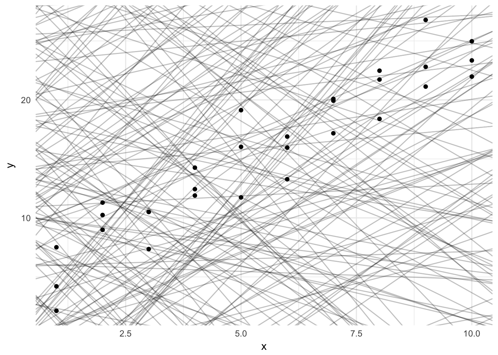
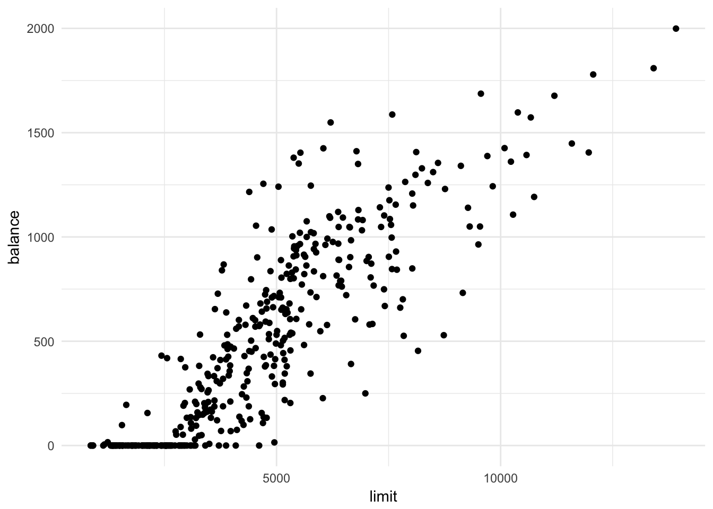
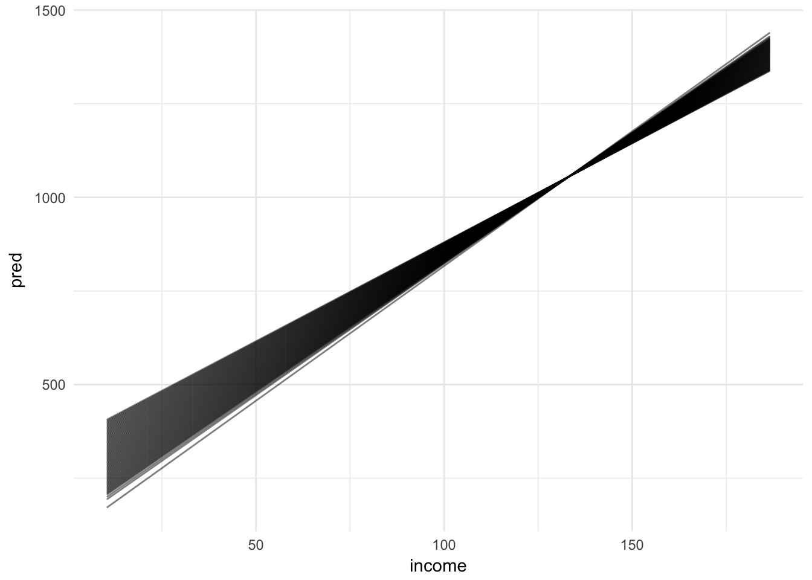

Statistical learning: linear regression
MACS 30100 - Perspectives on Computational Modeling
Objectives
- Introduce the functional form of linear regression
- Demonstrate how to estimate linear models using
lm()- Single variable linear regression
- Multiple linear regression
- Qualitative predictors
- Relaxing linear model assumptions
- Explain how to extract model statistics using
broom - Use the
modelrpackage to estimate predicted values and residuals
library(tidyverse)
library(modelr)
library(broom)
options(na.action = na.warn)
set.seed(1234)
theme_set(theme_minimal())Linear models
Linear models are the simplest functional form to understand. They adopt a generic form
\[Y = \beta_0 + \beta_{1}X\]
where \(y\) is the outcome of interest, \(x\) is the explanatory or predictor variable, and \(\beta_0\) and \(\beta_1\) are parameters that vary to capture different patterns. In algebraic terms, \(\beta_0\) is the intercept and \(\beta_1\) the slope for the linear equation. Given the empirical values you have for \(x\) and \(y\), you generate a fitted model that finds the values for the parameters that best fit the data.
ggplot(sim1, aes(x, y)) +
geom_point()
This looks like a linear relationship. We could randomly generate parameters for the formula \(y = \beta_0 + \beta_1 * x\) to try and explain or predict the relationship between \(x\) and \(y\):
models <- tibble(
a1 = runif(250, -20, 40),
a2 = runif(250, -5, 5)
)
ggplot(sim1, aes(x, y)) +
geom_abline(aes(intercept = a1, slope = a2), data = models, alpha = 1/4) +
geom_point()
But obviously some parameters are better than others. We need a definition that can be used to differentiate good parameters from bad parameters.
Least squares regression
One approach widely used is called least squares - it means that the overall solution minimizes the sum of the squares of the errors made in the results of every single equation. The errors are simply the difference between the actual values for \(y\) and the predicted values for \(y\) (also known as the residuals).
dist1 <- sim1 %>%
mutate(
dodge = rep(c(-1, 0, 1) / 20, 10),
x1 = x + dodge,
pred = 7 + x1 * 1.5
)
ggplot(dist1, aes(x1, y)) +
geom_abline(intercept = 7, slope = 1.5, color = "grey40") +
geom_point(color = "grey40") +
geom_linerange(aes(ymin = y, ymax = pred), color = "#3366FF")
To estimate a linear regression model in R, we use the lm() function. The lm() function takes two parameters. The first is a formula specifying the equation to be estimated (lm() translates y ~ x into \(y = \beta_0 + \beta_1 * x\)). The second is the data frame containing the variables:
sim1_mod <- lm(y ~ x, data = sim1)We can use the summary() function to examine key model components, including parameter estimates, standard errors, and model goodness-of-fit statistics.
summary(sim1_mod)##
## Call:
## lm(formula = y ~ x, data = sim1)
##
## Residuals:
## Min 1Q Median 3Q Max
## -4.1469 -1.5197 0.1331 1.4670 4.6516
##
## Coefficients:
## Estimate Std. Error t value Pr(>|t|)
## (Intercept) 4.2208 0.8688 4.858 4.09e-05 ***
## x 2.0515 0.1400 14.651 1.17e-14 ***
## ---
## Signif. codes: 0 '***' 0.001 '**' 0.01 '*' 0.05 '.' 0.1 ' ' 1
##
## Residual standard error: 2.203 on 28 degrees of freedom
## Multiple R-squared: 0.8846, Adjusted R-squared: 0.8805
## F-statistic: 214.7 on 1 and 28 DF, p-value: 1.173e-14The resulting line from this regression model looks like:
dist2 <- sim1 %>%
add_predictions(sim1_mod) %>%
mutate(
dodge = rep(c(-1, 0, 1) / 20, 10),
x1 = x + dodge
)
ggplot(dist2, aes(x1, y)) +
geom_smooth(method = "lm", color = "grey40") +
geom_point(color = "grey40") +
geom_linerange(aes(ymin = y, ymax = pred), color = "#3366FF")
Generating predicted values
We can use sim1_mod to generate predicted values, or the expected value for \(Y\) given our knowledge of hypothetical observations with values for \(X\), based on the estimated parameters using the data_grid() and add_predictions() functions from the modelr package. data_grid() generates an evenly spaced grid of data points covering the region where observed data lies. The first argument is a data frame, and subsequent arguments identify unique columns and generates all possible combinations.
grid <- sim1 %>%
data_grid(x)
grid## # A tibble: 10 × 1
## x
## <int>
## 1 1
## 2 2
## 3 3
## 4 4
## 5 5
## 6 6
## 7 7
## 8 8
## 9 9
## 10 10add_predictions() takes a data frame and a model, and uses the model to generate predictions for each observation in the data frame.
grid <- grid %>%
add_predictions(sim1_mod)
grid## # A tibble: 10 × 2
## x pred
## <int> <dbl>
## 1 1 6.272355
## 2 2 8.323888
## 3 3 10.375421
## 4 4 12.426954
## 5 5 14.478487
## 6 6 16.530020
## 7 7 18.581553
## 8 8 20.633087
## 9 9 22.684620
## 10 10 24.736153Using this information, we can draw the best-fit line without using geom_smooth(), and instead build it directly from the predicted values.
ggplot(sim1, aes(x)) +
geom_point(aes(y = y)) +
geom_line(aes(y = pred), data = grid, color = "red", size = 1)
This looks like the line from before, but without the confidence interval. This is a bit more involved of a process, but it can work with any type of model you create - not just very basic, linear models.
Generating residuals
We can also calculate the residuals, or the distance between the actual and predicted values of \(Y\), using add_residuals():
sim1 <- sim1 %>%
add_residuals(sim1_mod)
sim1## # A tibble: 30 × 3
## x y resid
## <int> <dbl> <dbl>
## 1 1 4.199913 -2.072442018
## 2 1 7.510634 1.238279125
## 3 1 2.125473 -4.146882207
## 4 2 8.988857 0.664969362
## 5 2 10.243105 1.919217378
## 6 2 11.296823 2.972935148
## 7 3 7.356365 -3.019056466
## 8 3 10.505349 0.129928252
## 9 3 10.511601 0.136179642
## 10 4 12.434589 0.007634878
## # ... with 20 more rowsggplot(sim1, aes(resid)) +
geom_freqpoly(binwidth = 0.5)
Reviewing your residuals can be helpful. Sometimes your model is better at predicting some types of observations better than others. This could help you isolate further patterns and improve the predictive accuracy of your model.
Exploring the credit dataset
Let’s practice exploring data and estimating linear regression models using the Credit data set from ISLR.
Import data
The first thing we want to do is load the libraries that contain the functions we will use for our analysis. Here we want to load the following libraries:
dplyr- functions for transforming dataggplot2- graphing functionsreadr- import data filesmodelr- helper functions for statistical modelingbroom- functions for tidying the results of model objects
Alternatively you can run
library(tidyverse)which will automatically load theggplot2,tibble,tidyr,readr,purrr, anddplyrlibraries. Also by installingtidyverse, you will automatically install additional libraries used for important tasks such as handling dates and strings, importing SPSS/Stata files, and scraping web data. More information ontidyversehere.
library(dplyr)
library(ggplot2)
library(readr)
library(modelr)
library(broom)We can import the .csv file using the read_csv() function from readr. We also need to remove the ID column and convert the column names to lowercase for consistency and style.
credit <- read_csv("data/Credit.csv") %>%
# remove first ID column
select(-X1)
names(credit) <- stringr::str_to_lower(names(credit)) # convert column names to lowercase
str(credit)## Classes 'tbl_df', 'tbl' and 'data.frame': 400 obs. of 11 variables:
## $ income : num 14.9 106 104.6 148.9 55.9 ...
## $ limit : int 3606 6645 7075 9504 4897 8047 3388 7114 3300 6819 ...
## $ rating : int 283 483 514 681 357 569 259 512 266 491 ...
## $ cards : int 2 3 4 3 2 4 2 2 5 3 ...
## $ age : int 34 82 71 36 68 77 37 87 66 41 ...
## $ education: int 11 15 11 11 16 10 12 9 13 19 ...
## $ gender : chr "Male" "Female" "Male" "Female" ...
## $ student : chr "No" "Yes" "No" "No" ...
## $ married : chr "Yes" "Yes" "No" "No" ...
## $ ethnicity: chr "Caucasian" "Asian" "Asian" "Asian" ...
## $ balance : int 333 903 580 964 331 1151 203 872 279 1350 ...
## - attr(*, "spec")=List of 2
## ..$ cols :List of 12
## .. ..$ X1 : list()
## .. .. ..- attr(*, "class")= chr "collector_integer" "collector"
## .. ..$ Income : list()
## .. .. ..- attr(*, "class")= chr "collector_double" "collector"
## .. ..$ Limit : list()
## .. .. ..- attr(*, "class")= chr "collector_integer" "collector"
## .. ..$ Rating : list()
## .. .. ..- attr(*, "class")= chr "collector_integer" "collector"
## .. ..$ Cards : list()
## .. .. ..- attr(*, "class")= chr "collector_integer" "collector"
## .. ..$ Age : list()
## .. .. ..- attr(*, "class")= chr "collector_integer" "collector"
## .. ..$ Education: list()
## .. .. ..- attr(*, "class")= chr "collector_integer" "collector"
## .. ..$ Gender : list()
## .. .. ..- attr(*, "class")= chr "collector_character" "collector"
## .. ..$ Student : list()
## .. .. ..- attr(*, "class")= chr "collector_character" "collector"
## .. ..$ Married : list()
## .. .. ..- attr(*, "class")= chr "collector_character" "collector"
## .. ..$ Ethnicity: list()
## .. .. ..- attr(*, "class")= chr "collector_character" "collector"
## .. ..$ Balance : list()
## .. .. ..- attr(*, "class")= chr "collector_integer" "collector"
## ..$ default: list()
## .. ..- attr(*, "class")= chr "collector_guess" "collector"
## ..- attr(*, "class")= chr "col_spec"Distribution of credit variable
Initially, we may just want to evaluate the distribution of balance. We can use the ggplot2 library and geom_histogram() to generate a histogram plot:
ggplot(credit, mapping = aes(x = balance)) +
geom_histogram() +
labs(title = "Distribution of credit card balances",
x = "Credit card balance",
y = "Frequency count of individuals")
Confused by all the
ggplotfunctions? Use this cheatsheet to master the syntax and functions.
Estimate single variable linear regression model
Suppose we want to understand the relationship between an individual’s credit limit and their current balance on the credit card. We could visualize the data using a scatterplot:
credit %>%
ggplot(mapping = aes(x = limit, y = balance)) +
geom_point()
Not too bad. It seems like there is a clear positive trend. Why not estimate a simple linear model that summarizes this trend?
credit_limit <- lm(balance ~ limit, data = credit)
summary(credit_limit)##
## Call:
## lm(formula = balance ~ limit, data = credit)
##
## Residuals:
## Min 1Q Median 3Q Max
## -676.95 -141.87 -11.55 134.11 776.44
##
## Coefficients:
## Estimate Std. Error t value Pr(>|t|)
## (Intercept) -2.928e+02 2.668e+01 -10.97 <2e-16 ***
## limit 1.716e-01 5.066e-03 33.88 <2e-16 ***
## ---
## Signif. codes: 0 '***' 0.001 '**' 0.01 '*' 0.05 '.' 0.1 ' ' 1
##
## Residual standard error: 233.6 on 398 degrees of freedom
## Multiple R-squared: 0.7425, Adjusted R-squared: 0.7419
## F-statistic: 1148 on 1 and 398 DF, p-value: < 2.2e-16grid <- credit %>%
data_grid(limit)
grid## # A tibble: 387 × 1
## limit
## <int>
## 1 855
## 2 886
## 3 905
## 4 906
## 5 1134
## 6 1160
## 7 1233
## 8 1300
## 9 1311
## 10 1335
## # ... with 377 more rowsgrid <- grid %>%
add_predictions(credit_limit)
grid## # A tibble: 387 × 2
## limit pred
## <int> <dbl>
## 1 855 -146.04062
## 2 886 -140.71987
## 3 905 -137.45876
## 4 906 -137.28712
## 5 1134 -98.15382
## 6 1160 -93.69125
## 7 1233 -81.16173
## 8 1300 -69.66203
## 9 1311 -67.77402
## 10 1335 -63.65473
## # ... with 377 more rowsggplot(credit, aes(x = limit)) +
geom_point(aes(y = balance)) +
geom_line(aes(y = pred), data = grid, color = "red", size = 1)
This is not too bad of a first model. Clearly it is not perfect as it suggests that individuals with a limit below approximately $1,000 have a negative balance, but it is a good first cut.
Extracting model statistics
Model objects are not very pretty in R. lm() objects are stored in lists. One important feature of lists is that they are recursive - lists can store other lists. We use the str() to print the structure of an object in R:
str(credit_limit)## List of 12
## $ coefficients : Named num [1:2] -292.79 0.172
## ..- attr(*, "names")= chr [1:2] "(Intercept)" "limit"
## $ residuals : Named num [1:400] 6.87 55.26 -341.54 -374.45 -216.72 ...
## ..- attr(*, "names")= chr [1:400] "1" "2" "3" "4" ...
## $ effects : Named num [1:400] -10400 -7914 -345 -380 -217 ...
## ..- attr(*, "names")= chr [1:400] "(Intercept)" "limit" "" "" ...
## $ rank : int 2
## $ fitted.values: Named num [1:400] 326 848 922 1338 548 ...
## ..- attr(*, "names")= chr [1:400] "1" "2" "3" "4" ...
## $ assign : int [1:2] 0 1
## $ qr :List of 5
## ..$ qr : num [1:400, 1:2] -20 0.05 0.05 0.05 0.05 0.05 0.05 0.05 0.05 0.05 ...
## .. ..- attr(*, "dimnames")=List of 2
## .. .. ..$ : chr [1:400] "1" "2" "3" "4" ...
## .. .. ..$ : chr [1:2] "(Intercept)" "limit"
## .. ..- attr(*, "assign")= int [1:2] 0 1
## ..$ qraux: num [1:2] 1.05 1.04
## ..$ pivot: int [1:2] 1 2
## ..$ tol : num 1e-07
## ..$ rank : int 2
## ..- attr(*, "class")= chr "qr"
## $ df.residual : int 398
## $ xlevels : Named list()
## $ call : language lm(formula = balance ~ limit, data = credit)
## $ terms :Classes 'terms', 'formula' language balance ~ limit
## .. ..- attr(*, "variables")= language list(balance, limit)
## .. ..- attr(*, "factors")= int [1:2, 1] 0 1
## .. .. ..- attr(*, "dimnames")=List of 2
## .. .. .. ..$ : chr [1:2] "balance" "limit"
## .. .. .. ..$ : chr "limit"
## .. ..- attr(*, "term.labels")= chr "limit"
## .. ..- attr(*, "order")= int 1
## .. ..- attr(*, "intercept")= int 1
## .. ..- attr(*, "response")= int 1
## .. ..- attr(*, ".Environment")=<environment: R_GlobalEnv>
## .. ..- attr(*, "predvars")= language list(balance, limit)
## .. ..- attr(*, "dataClasses")= Named chr [1:2] "numeric" "numeric"
## .. .. ..- attr(*, "names")= chr [1:2] "balance" "limit"
## $ model :'data.frame': 400 obs. of 2 variables:
## ..$ balance: int [1:400] 333 903 580 964 331 1151 203 872 279 1350 ...
## ..$ limit : int [1:400] 3606 6645 7075 9504 4897 8047 3388 7114 3300 6819 ...
## ..- attr(*, "terms")=Classes 'terms', 'formula' language balance ~ limit
## .. .. ..- attr(*, "variables")= language list(balance, limit)
## .. .. ..- attr(*, "factors")= int [1:2, 1] 0 1
## .. .. .. ..- attr(*, "dimnames")=List of 2
## .. .. .. .. ..$ : chr [1:2] "balance" "limit"
## .. .. .. .. ..$ : chr "limit"
## .. .. ..- attr(*, "term.labels")= chr "limit"
## .. .. ..- attr(*, "order")= int 1
## .. .. ..- attr(*, "intercept")= int 1
## .. .. ..- attr(*, "response")= int 1
## .. .. ..- attr(*, ".Environment")=<environment: R_GlobalEnv>
## .. .. ..- attr(*, "predvars")= language list(balance, limit)
## .. .. ..- attr(*, "dataClasses")= Named chr [1:2] "numeric" "numeric"
## .. .. .. ..- attr(*, "names")= chr [1:2] "balance" "limit"
## - attr(*, "class")= chr "lm"While there are lots of important statistics and information stored inside the credit_limit object, it is very difficult to access them. Instead, we might prefer this information could be retrieved in a tidy data frame. Data frames (and their variants tibles) are one of the most common data objects in R. There are three rules which make a data frame tidy:
- Each variable must have its own column.
- Each observation must have its own row.
- Each value must have its own cell.
In order to extract model statistics and use them in a tidy manner, we can use a set of functions from the broom package. For these functions, the input is always the model object generated by lm(), not the original data frame.
tidy()
tidy() constructs a data frame that summarizes the model’s statistical findings. This includes coefficients and p-values for each parameter in a model. Different models will report different elements.
library(broom)
tidy(credit_limit)## term estimate std.error statistic p.value
## 1 (Intercept) -292.7904955 26.683414516 -10.97275 1.184152e-24
## 2 limit 0.1716373 0.005066234 33.87867 2.530581e-119tidy(credit_limit) %>%
str()## 'data.frame': 2 obs. of 5 variables:
## $ term : chr "(Intercept)" "limit"
## $ estimate : num -292.79 0.172
## $ std.error: num 26.68341 0.00507
## $ statistic: num -11 33.9
## $ p.value : num 1.18e-24 2.53e-119Notice that the structure of the resulting object is a tidy data frame. Every row contains a single parameter, every column contains a single statistic, and every cell contains exactly one value.
augment()
augment() adds columns to the original data that was modeled. This could include predictions, residuals, and other observation-level statistics.
augment(credit_limit) %>%
tbl_df()## # A tibble: 400 × 9
## balance limit .fitted .se.fit .resid .hat .sigma
## <int> <int> <dbl> <dbl> <dbl> <dbl> <dbl>
## 1 333 3606 326.1335 13.00598 6.866470 0.003100247 233.8787
## 2 903 6645 847.7392 15.16512 55.260781 0.004215041 233.8625
## 3 580 7075 921.5432 16.63952 -341.543249 0.005074481 233.2468
## 4 964 9504 1338.4502 26.83292 -374.450198 0.013196114 233.1126
## 5 331 4897 547.7173 11.70784 -216.717257 0.002512254 233.6253
## 6 1151 8047 1088.3747 20.44138 62.625316 0.007658269 233.8577
## 7 203 3388 288.7166 13.52835 -85.716604 0.003354285 233.8393
## 8 872 7114 928.2371 16.78083 -56.237103 0.005161034 233.8619
## 9 279 3300 273.6125 13.75873 5.387477 0.003469499 233.8788
## 10 1350 6819 877.6041 15.74207 472.395894 0.004541860 232.6687
## # ... with 390 more rows, and 2 more variables: .cooksd <dbl>,
## # .std.resid <dbl>By default, augment() will only return statistics to the original data used to estimate the model, whereas add_predictions() is used to generate predictions for new data. For linear models, augment() generates columns for:
.fitted- fitted (or predicted) values based on the modelse.fit- standard errors of the fitted values.resid- residuals (same as generated byadd_residuals()).hat- diagonal of the hat matrix.sigma- estimate of the residual standard deviation when the corresponding observation is dropped from the model.cooksd- Cook’s distance, useful for identifying high leverage points.std.resid- standardized residuals (similar in concept to studentized residuals)
glance()
glance() constructs a concise one-row summary of the model. This typically contains values such as \(R^2\), adjusted \(R^2\), and residual standard error that are computed once for the entire model.
glance(credit_limit)## r.squared adj.r.squared sigma statistic p.value df logLik
## 1 0.7425222 0.7418753 233.585 1147.764 2.530581e-119 2 -2747.991
## AIC BIC deviance df.residual
## 1 5501.983 5513.957 21715657 398For linear models, glance() generates several useful model metrics:
r.squared- the percent of variance explained by the model- This is one of the metrics identified in ISL for evaluating model fit. It is relatively basic and we will soon consider more robust measures of fit, but it is a quick and dirty metric to compare the effectiveness of competing models of the same response variable.
adj.r.squared- \(R^2\) adjusted based on the degrees of freedom of the modelsigma- the square root of the estimated residual variancestatistic- \(F\)-statistic testing the hypothesis that all parameters are equal to 0p.value- the \(p\)-value from the F testdf- degrees of freedom used by the coefficientslogLik- the data’s log-likelihood under the modelAIC- the Akaike Information Criterion, used to compare modelsBIC- the Bayesian Information Criterion, also used to compare modelsdeviance- deviance of the modeldf.residual- residual degrees of freedom
While broom may not work with every model in R, it is compatible with a wide range of common statistical models. A full list of models with which broom is compatible can be found on the GitHub page for the package.
Generating predicted values with confidence intervals
add_predictions() generates predicted values for a dataset given a specified model, however it does not report the standard error of those predictions. To generate confidence intervals, we first use the augment() to generate predicted values for new data by using the newdata argument, then calculate the 95% confidence intervals manually. For example, what is the predicted credit card balance and 95% confidence interval for an individual with a credit limit of $2,000, $5,000, and $10,000?
# create data frame with new values
(pred_data <- data_frame(limit = c(2000, 5000, 10000)))## # A tibble: 3 × 1
## limit
## <dbl>
## 1 2000
## 2 5000
## 3 10000# use augment to generate predictions
(pred_aug <- augment(credit_limit, newdata = pred_data))## limit .fitted .se.fit
## 1 2000 50.48406 18.12407
## 2 5000 565.39590 11.75581
## 3 10000 1423.58229 29.11581# Calculate 95% confidence intervals
(pred_ci <- mutate(pred_aug,
ymin = .fitted - .se.fit * 1.96,
ymax = .fitted + .se.fit * 1.96))## limit .fitted .se.fit ymin ymax
## 1 2000 50.48406 18.12407 14.96088 86.00725
## 2 5000 565.39590 11.75581 542.35450 588.43729
## 3 10000 1423.58229 29.11581 1366.51530 1480.64927# do it in one piped operation
(pred_ci <- augment(credit_limit, newdata = data_frame(limit = c(2000, 5000, 10000))) %>%
mutate(ymin = .fitted - .se.fit * 1.96,
ymax = .fitted + .se.fit * 1.96))## limit .fitted .se.fit ymin ymax
## 1 2000 50.48406 18.12407 14.96088 86.00725
## 2 5000 565.39590 11.75581 542.35450 588.43729
## 3 10000 1423.58229 29.11581 1366.51530 1480.64927Estimating multiple linear regression model
lm() allows you to estimate linear regression models with multiple variables. For instance, say we want to evaluate an individual’s credit balance using both their credit limit and income.
credit_limit_income <- lm(balance ~ limit + income, data = credit)
tidy(credit_limit_income)## term estimate std.error statistic p.value
## 1 (Intercept) -385.1792604 19.464801525 -19.78850 3.878764e-61
## 2 limit 0.2643216 0.005879729 44.95471 7.717386e-158
## 3 income -7.6633230 0.385072058 -19.90101 1.260933e-61Now that we have two predictor variables in our model, remember how to accurately interpret these results. \(\beta_{j}\) is interpreted as the average effect of \(Y\) of a one unit increase in \(X_{j}\), holding all other predictors constant. So the parameter for credit limit tells us the estimated effect on credit card balance of a $1 increase in the individual’s credit limit, after controlling for the effects of income.
Qualitative predictors
Predictor variables are frequently quantitative, but this is not a guarantee. In many datasets you will have qualitiative predictors, or variables that have discrete values. In the credit dataset, we have four such columns:
select(credit, gender, student, married, ethnicity)## # A tibble: 400 × 4
## gender student married ethnicity
## <chr> <chr> <chr> <chr>
## 1 Male No Yes Caucasian
## 2 Female Yes Yes Asian
## 3 Male No No Asian
## 4 Female No No Asian
## 5 Male No Yes Caucasian
## 6 Male No No Caucasian
## 7 Female No No African American
## 8 Male No No Asian
## 9 Female No No Caucasian
## 10 Female Yes Yes African American
## # ... with 390 more rowsWe can include these variables in a linear regression model and they will act as an indicator or dummy variable that takes on a value of 0 or 1.
Qualitative predictors with 2 levels
For instance, let’s use gender to explain an individual’s credit card balance.
gender <- lm(balance ~ gender, data = credit)
tidy(gender)## term estimate std.error statistic p.value
## 1 (Intercept) 529.53623 31.98819 16.5541153 3.312981e-47
## 2 genderMale -19.73312 46.05121 -0.4285039 6.685161e-01In the background, R converts the column into a series of 0s and 1s. For this column, it automatically converted Female to 0 and Male to 1 (it transform the columns alphabetically). If we wish to override this order, we can assign an ordering using the factor() function:1
credit %>%
mutate(gender = factor(gender, levels = c("Male", "Female"))) %>%
lm(balance ~ gender, data = .) %>%
tidy()## term estimate std.error statistic p.value
## 1 (Intercept) 509.80311 33.12808 15.3888531 2.908941e-42
## 2 genderFemale 19.73312 46.05121 0.4285039 6.685161e-01Note that the only difference is the directionality of the genderFemale parameter is reversed from the previous model.
Or we could convert the column directly to 0s and 1s:
credit %>%
mutate(female = ifelse(gender == "Female", 1, 0)) %>%
lm(balance ~ female, data = .) %>%
tidy()## term estimate std.error statistic p.value
## 1 (Intercept) 509.80311 33.12808 15.3888531 2.908941e-42
## 2 female 19.73312 46.05121 0.4285039 6.685161e-01Frequently your data will originally be coded using this 0/1 scheme. If you don’t like this, you can always convert it back using the factor() approach outlined above:
credit %>%
select(gender) %>%
mutate(gender_f = factor(gender, levels = c("Male", "Female")),
female = ifelse(gender == "Female", 1, 0),
female_f = factor(female, levels = 0:1, labels = c("Male", "Female")))## # A tibble: 400 × 4
## gender gender_f female female_f
## <chr> <fctr> <dbl> <fctr>
## 1 Male Male 0 Male
## 2 Female Female 1 Female
## 3 Male Male 0 Male
## 4 Female Female 1 Female
## 5 Male Male 0 Male
## 6 Male Male 0 Male
## 7 Female Female 1 Female
## 8 Male Male 0 Male
## 9 Female Female 1 Female
## 10 Female Female 1 Female
## # ... with 390 more rowsQualitative predictors with more than 2 levels
If your qualitative predictor uses more than two levels (for instance, ethnicity), you will include the column in your linear regression model and R will automatically convert it into a series of dummy variables, using 0/1 switches for each dummy variable. R will always omit one of the levels and leave it out as the baseline.2
ethnicity <- lm(balance ~ ethnicity, data = credit)
tidy(ethnicity)## term estimate std.error statistic p.value
## 1 (Intercept) 531.00000 46.31868 11.4640565 1.774117e-26
## 2 ethnicityAsian -18.68627 65.02107 -0.2873880 7.739652e-01
## 3 ethnicityCaucasian -12.50251 56.68104 -0.2205766 8.255355e-01Here R created dummy variables for “Asian” and “Caucasian”, leaving out “African American” as the baseline category.
Extending the linear model
Remember that because it is a basic functional form, the linear model is very unforgiving in a key assumption: it assumes an additive and linear shape. The additive assumption requires the effect of changes in any of the predictor variables \(X_j\) on the response variable \(Y\) to be independent of all other predictors. The linear assumption presumes that the change in \(Y\) associated with a one-unit change in \(X_j\) is constant regardless of the value of \(X_j\). While other, more complicated functional forms can be used to relax this assumption, we can also directly alter these assumptions based on how we specify our model
Removing the additive assumption: interaction terms
Two quantitative variables
Let’s evaluate the effect of income and age on an individual’s credit card balance.
income_age <- lm(balance ~ income + age, data = credit)
tidy(income_age)## term estimate std.error statistic p.value
## 1 (Intercept) 359.672743 70.3582998 5.112016 4.966220e-07
## 2 income 6.235879 0.5867574 10.627696 2.197302e-23
## 3 age -2.185067 1.1988446 -1.822644 6.910931e-02Both are statistically significant with sizeable effects on the response variable. However the effects are completely independent from one another. By this I mean, if I plot the relationship between income and predicted balance, the value for limit does not alter this relationship other than to adjust the intercept.
credit %>%
data_grid(income, age) %>%
add_predictions(income_age) %>%
ggplot(aes(income, pred, group = age)) +
geom_line(alpha = .5)
But is this really a safe assumption? After all, an individual’s income is based (in part) on their age. The older your are and longer you have worked, the higher your expected income. So wouldn’t we expect the relationship between income and credit balance to vary based on an individual’s age? That is, we expect the underlying relationship to directly violate the additive assumption.
We should therefore relax this assumption by interacting income and age. The new linear regression model looks like
\[Y = \beta_0 + \beta_{1}X_1 + \beta_{2}X_2 + \beta_{3}X_{1}X_{2}\]
where \(X_1\) is income and \(X_2\) is age. To specify this model in R, we write the following code:
inc_age_x <- lm(balance ~ income * age, data = credit)
tidy(inc_age_x)## term estimate std.error statistic p.value
## 1 (Intercept) 429.66553527 112.85270937 3.8073125 0.000162744
## 2 income 4.69805044 2.02501466 2.3200081 0.020848070
## 3 age -3.39437360 1.93939704 -1.7502211 0.080854625
## 4 income:age 0.02548648 0.03211953 0.7934884 0.427968484Now what happens if we graph the relationship between income and predicted credit card balance, controlling for the credit limit?
credit %>%
data_grid(income, age) %>%
add_predictions(inc_age_x) %>%
ggplot(aes(income, pred, group = age)) +
geom_line(alpha = .5)
Not only have the intercepts changed, but so too have the slopes.
Quantitative and qualitative variable
We can also use interaction terms with a qualitative variable, such as student. Consider the regression model without an interaction
inc_student <- lm(balance ~ income + student, data = credit)
tidy(inc_student)## term estimate std.error statistic p.value
## 1 (Intercept) 211.142964 32.4572113 6.505271 2.338288e-10
## 2 income 5.984336 0.5566232 10.751143 7.817642e-24
## 3 studentYes 382.670539 65.3108082 5.859222 9.775720e-09credit %>%
data_grid(income, student) %>%
add_predictions(inc_student) %>%
ggplot(aes(income, pred, color = student)) +
geom_line()
As before with the quantitative variables, the parameter for income does not change based on the value for student, only the intercept for the model shifts. However for an interactive model:
inc_student_x <- lm(balance ~ income * student, data = credit)
tidy(inc_student_x)## term estimate std.error statistic p.value
## 1 (Intercept) 200.623153 33.6983706 5.953497 5.789658e-09
## 2 income 6.218169 0.5920936 10.502003 6.340684e-23
## 3 studentYes 476.675843 104.3512235 4.567995 6.586095e-06
## 4 income:studentYes -1.999151 1.7312511 -1.154743 2.488919e-01credit %>%
data_grid(income, student) %>%
add_predictions(inc_student_x) %>%
ggplot(aes(income, pred, color = student)) +
geom_line()
This suggests that changes in income may affect the credit card balance of students and non-students differently.
Non-linear relationships
One way to relax the linearity assumption is to use polynomials in your regression model. For instance, take the Auto data set.
auto <- read_csv("data/Auto.csv",
# make sure horsepower is parsed as numeric
col_types = cols(horsepower = col_number())) %>%
# remove missing data
na.omit(horsepower)
# estimate linear model of horsepower and mpg
horse <- lm(mpg ~ horsepower, data = auto)
tidy(horse)## term estimate std.error statistic p.value
## 1 (Intercept) 39.9358610 0.717498656 55.65984 1.220362e-187
## 2 horsepower -0.1578447 0.006445501 -24.48914 7.031989e-81# generate predicted values
horse_pred <- auto %>%
add_predictions(horse)
# draw the graph
ggplot(horse_pred, aes(horsepower)) +
geom_point(aes(y = mpg), alpha = .5) +
geom_line(aes(y = pred), color = "orange", size = 1)
Is a linear regression line of the form \(\text{mpg} = \beta_0 + \beta_{1}\text{horsepower}\) really the best fit here? The relationship appears to have a curvilinear shape to it. Instead, we can estimate a model of the form
\[\text{mpg} = \beta_0 + \beta_{1}\text{horsepower} + \beta_{2}\text{horsepower}^2\]
# estimate polynomial squared model of horsepower and mpg
horse2 <- lm(mpg ~ horsepower + I(horsepower^2), data = auto)
tidy(horse2)## term estimate std.error statistic p.value
## 1 (Intercept) 56.900099702 1.8004268063 31.60367 1.740911e-109
## 2 horsepower -0.466189630 0.0311246171 -14.97816 2.289429e-40
## 3 I(horsepower^2) 0.001230536 0.0001220759 10.08009 2.196340e-21# generate predicted values
horse2_pred <- auto %>%
add_predictions(horse2)
# draw the graph
ggplot(horse2_pred, aes(horsepower)) +
geom_point(aes(y = mpg), alpha = .5) +
geom_line(data = horse_pred, aes(y = pred), color = "orange", size = 1) +
geom_line(aes(y = pred), color = "blue", size = 1)
Or even a polynomial to the fifth power
\[\text{mpg} = \beta_0 + \beta_{1}\text{horsepower} + \beta_{2}\text{horsepower}^2 + \beta_{3}\text{horsepower}^3 + \beta_{4}\text{horsepower}^4 + \beta_{5}\text{horsepower}^5\]
# estimate polynomial fifth-order model of horsepower and mpg
# use the poly() function to generate the powers
horse5 <- lm(mpg ~ horsepower + poly(horsepower, degrees = 5), data = auto)
tidy(horse5)## term estimate std.error statistic
## 1 (Intercept) 39.9358610 0.632690619 63.1206783
## 2 horsepower -0.1578447 0.005683645 -27.7717434
## 3 poly(horsepower, degrees = 5)2 44.0895278 4.325898537 10.1919930
## 4 poly(horsepower, degrees = 5)3 -3.9488485 4.325898537 -0.9128389
## 5 poly(horsepower, degrees = 5)4 -5.1878103 4.325898537 -1.1992446
## 6 poly(horsepower, degrees = 5)5 13.2721869 4.325898537 3.0680763
## p.value
## 1 1.669357e-205
## 2 4.617361e-94
## 3 9.240203e-22
## 4 3.618971e-01
## 5 2.311685e-01
## 6 2.306428e-03# generate predicted values
horse5_pred <- auto %>%
add_predictions(horse5)
# draw the graph
ggplot(horse5_pred, aes(horsepower)) +
geom_point(aes(y = mpg), alpha = .5) +
geom_line(data = horse_pred, aes(y = pred), color = "orange", size = 1) +
geom_line(data = horse2_pred, aes(y = pred), color = "blue", size = 1) +
geom_line(aes(y = pred), color = "green", size = 1)
How do we know which model is most appropriate? One thing we could do is compare model fit statistics:
# combine models into a list and use a map() function to apply
# glance() to each model and store the result in a tidy data frame
list("degree_1" = horse,
"degree_2" = horse2,
"degree_5" = horse5) %>%
map_df(glance, .id = "id")## id r.squared adj.r.squared sigma statistic p.value df
## 1 degree_1 0.6059483 0.6049379 4.905757 599.7177 7.031989e-81 2
## 2 degree_2 0.6875590 0.6859527 4.373921 428.0176 5.399723e-99 3
## 3 degree_5 0.6967390 0.6928108 4.325899 177.3662 1.162963e-97 6
## logLik AIC BIC deviance df.residual
## 1 -1178.662 2363.324 2375.237 9385.916 390
## 2 -1133.177 2274.354 2290.239 7442.029 389
## 3 -1127.332 2268.663 2296.462 7223.372 386Based on the \(R^2\) values, the fifth-order polynomial explains the most variation in mpg. But the fifth-order polynomial is also more complicated and throws extra bends and curves into the predicted values for mpg. Ultimately whatever form we specify for the model, we are still making an assumption that the true relationship between horsepower and mileage takes on this form - ultimately it is untestable.
Session Info
devtools::session_info()## setting value
## version R version 3.3.2 (2016-10-31)
## system x86_64, darwin13.4.0
## ui RStudio (1.0.136)
## language (EN)
## collate en_US.UTF-8
## tz America/Chicago
## date 2017-02-13
##
## package * version date source
## assertthat 0.1 2013-12-06 CRAN (R 3.3.0)
## backports 1.0.5 2017-01-18 CRAN (R 3.3.2)
## base64enc 0.1-3 2015-07-28 CRAN (R 3.3.0)
## broom * 0.4.1 2016-06-24 CRAN (R 3.3.0)
## colorspace 1.3-2 2016-12-14 CRAN (R 3.3.2)
## config 0.2 2016-08-02 CRAN (R 3.3.0)
## DBI 0.5-1 2016-09-10 CRAN (R 3.3.0)
## devtools 1.12.0 2016-06-24 CRAN (R 3.3.0)
## digest 0.6.12 2017-01-27 CRAN (R 3.3.2)
## dplyr * 0.5.0 2016-06-24 CRAN (R 3.3.0)
## evaluate 0.10 2016-10-11 CRAN (R 3.3.0)
## forcats 0.2.0 2017-01-23 CRAN (R 3.3.2)
## foreign 0.8-67 2016-09-13 CRAN (R 3.3.2)
## gapminder * 0.2.0 2015-12-31 CRAN (R 3.3.0)
## ggplot2 * 2.2.1 2016-12-30 CRAN (R 3.3.2)
## gtable 0.2.0 2016-02-26 CRAN (R 3.3.0)
## haven 1.0.0 2016-09-23 cran (@1.0.0)
## highr 0.6 2016-05-09 CRAN (R 3.3.0)
## hms 0.3 2016-11-22 CRAN (R 3.3.2)
## htmltools 0.3.5 2016-03-21 CRAN (R 3.3.0)
## httr 1.2.1 2016-07-03 CRAN (R 3.3.0)
## jsonlite 1.2 2016-12-31 CRAN (R 3.3.2)
## knitr * 1.15.1 2016-11-22 cran (@1.15.1)
## labeling 0.3 2014-08-23 CRAN (R 3.3.0)
## lattice 0.20-34 2016-09-06 CRAN (R 3.3.2)
## lazyeval 0.2.0 2016-06-12 CRAN (R 3.3.0)
## lubridate 1.6.0 2016-09-13 CRAN (R 3.3.0)
## magrittr 1.5 2014-11-22 CRAN (R 3.3.0)
## Matrix 1.2-8 2017-01-20 CRAN (R 3.3.2)
## memoise 1.0.0 2016-01-29 CRAN (R 3.3.0)
## mgcv 1.8-16 2016-11-07 CRAN (R 3.3.0)
## mnormt 1.5-5 2016-10-15 CRAN (R 3.3.0)
## modelr * 0.1.0 2016-08-31 CRAN (R 3.3.0)
## munsell 0.4.3 2016-02-13 CRAN (R 3.3.0)
## nlme 3.1-130 2017-01-24 CRAN (R 3.3.2)
## nycflights13 0.2.2 2017-01-27 CRAN (R 3.3.2)
## plyr 1.8.4 2016-06-08 CRAN (R 3.3.0)
## psych 1.6.12 2017-01-08 CRAN (R 3.3.2)
## purrr * 0.2.2 2016-06-18 CRAN (R 3.3.0)
## R6 2.2.0 2016-10-05 CRAN (R 3.3.0)
## rappdirs 0.3.1 2016-03-28 CRAN (R 3.3.0)
## rcfss * 0.1.3 2017-02-07 local
## Rcpp 0.12.9 2017-01-14 CRAN (R 3.3.2)
## readr * 1.0.0 2016-08-03 CRAN (R 3.3.0)
## readxl 0.1.1 2016-03-28 CRAN (R 3.3.0)
## reshape2 1.4.2 2016-10-22 CRAN (R 3.3.0)
## rmarkdown 1.3 2016-12-21 CRAN (R 3.3.2)
## rprojroot 1.2 2017-01-16 CRAN (R 3.3.2)
## rstudioapi 0.6 2016-06-27 CRAN (R 3.3.0)
## rvest 0.3.2 2016-06-17 CRAN (R 3.3.0)
## scales 0.4.1 2016-11-09 CRAN (R 3.3.1)
## sparklyr * 0.5.1 2016-12-19 CRAN (R 3.3.2)
## stringi 1.1.2 2016-10-01 CRAN (R 3.3.0)
## stringr * 1.1.0 2016-08-19 cran (@1.1.0)
## tibble * 1.2 2016-08-26 cran (@1.2)
## tidyr * 0.6.1 2017-01-10 CRAN (R 3.3.2)
## tidyverse * 1.1.1 2017-01-27 CRAN (R 3.3.2)
## titanic * 0.1.0 2015-08-31 CRAN (R 3.3.0)
## withr 1.0.2 2016-06-20 CRAN (R 3.3.0)
## xml2 1.1.1 2017-01-24 CRAN (R 3.3.2)
## yaml 2.1.14 2016-11-12 cran (@2.1.14)See R for Data Science for more on working with factor variables.↩
If you do not omit a category, your model will be perfectly multicollinear and you will not be able to estimate it. Alternatively, you can omit the intercept and keep all the original levels.↩
This work is licensed under the CC BY-NC 4.0 Creative Commons License.